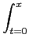
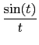
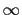
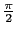
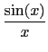
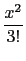
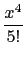
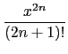

suivant: La fonction de Heaviside
monter: Les réels
précédent: La fonction cosinus integral
Table des matières
Index
La fonction sinus integral Si : Si
Si a comme argument un nombre complexe a.
Si calcule les valeurs de la fonction Si au point a.
On a par définition
Si(x) = dt
On a Si(0) = 0,
Si(- ) = - ,
Si(+ ) = .
Lorsque l'on est proche de x = 0 on sait que :
 = 1 -  +  + ... + (- 1)n....
ce qui donne par intégration le développement en séries de Si en 0.
On observe aussi que Si est une fonction impaire.
On tape :
Si(1.)
On obtient :
0.946083070367
On tape :
Si(-1.)
On obtient :
-0.946083070367
On tape :
Si(1.)+Si(-1.)
On obtient :
0
On tape :
Si(1.)-Si(-1.)
On obtient :
1.89216614073
On tape :
int(sin(x)/x,x=-1..1.)
On obtient :
1.89216614073
Documentation de giac écrite par Renée De Graeve